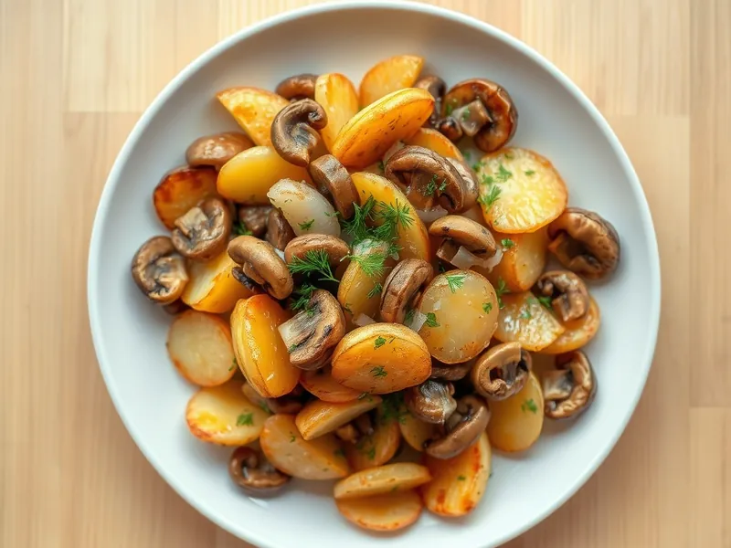

Фото: Иллюстрация ИИ, Cloudflare Workers AI
Жареная картошка с грибами
Картошка с корочкой, шампиньонами и луком на одной сковороде
30 мин3 порц.395 ккал на порциюБ 10 · Ж 19 · У 48Русская кухня
Продукты на 3 порц.
- Картофель7 шт
- Шампиньоны300 г
- Лук репчатый1 шт
- Растительное масло3 ст. л.
- Соль1,5 ч. л.
- Перец чёрный молотыйпо вкусу
- Укроп по желанию0,5 пучка
Как готовить
- Почистите картофель и нарежьте тонкими брусочками 0,5 см. Промойте в холодной воде и обсушите полотенцем.
- Нарежьте шампиньоны пластинами, лук полукольцами.
- Разогрейте 1 ст. л. масла на сильном огне и обжарьте грибы с луком 7 минут, пока сок не выпарится, а грибы не подрумянятся. Переложите в тарелку.
- Влейте оставшееся масло, выложите картофель ровным слоем и жарьте на среднем огне 12 минут, переворачивая лопаткой раз в 3-4 минуты, пока не появится корочка.
- Добавьте грибы с луком, посолите, поперчите и жарьте ещё 5 минут, пока картофель не станет мягким внутри и нож не будет входить легко.
- Посыпьте рубленым укропом и подавайте горячей.
Совет. Солите картошку только в конце: соль вытягивает сок, и вместо корочки картошка потушится.